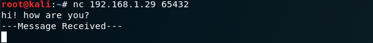

Send messages
Client connection with
netcat
with the command below we connect with the server(192.168.1.29
:65432):
and then we can send a message to the server
example:Client connection with
python
#!/usr/bin/env python3
import socket
SERVER_ADDRESS = "192.168.1.29" # The server's hostname or IP address
SERVER_PORT= 65432
s=socket.socket(socket.AF_INET, socket.SOCK_STREAM)
s.connect((SERVER_ADDRESS, SERVER_PORT))
print("Connection established")
while True:
message=input("Message to send: ")
s.sendall(message.encode())
data = s.recv(1024)
print(data.decode("utf-8"))
s.close()
•
s.connect((SERVER_ADDRESS, SERVER_PORT)) socket.connect(address) → Connect to a remote socket at address